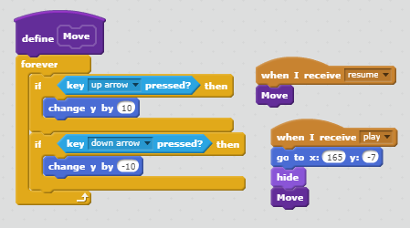

Portfolio
Space Laser X

In this game, you are sent on a mission to destroy criminal spaceships
and defeat the boss without losing your life. I implemented many HP
variables and a point scoring system for my scoring systems. I used
a randomizer to change the color of my return to home/try again buttons
which appear when the user loses or wins the game. The randomizer picks
a number from 1 to 5 which changes the color value of the text. The game
increases in difficulty as you defeat more spaceships, until you defeat
the boss.The player loses when the avatar's HP goes from 30 (when the game
starts) to 0. Each laser lowers the player's HP by 1.
Link to Game: https://scratch.mit.edu/projects/258885240/
Reflection
I made this game, because I wanted to remeber some of my childhood days
with my father. When he would take my brother and I somewhere, he
would let us play an arcade game like this on his phone. That game is
what inspired me to create Space Laser X. 2 succesful points in this
project was being able to make my lasers destroy the player spaceship
and the enemy spaceship as well as making a functional pause menu. 2
obstacles I had were making new enemy ships appear once a certain
amount of ships died and making the scrolling background. I overcame
the dead ship problem by making a death toll variable and implementing
it into my code. I created a scrolling background by looking at
speckosaurus's project on infinte scrolling backgrounds and basing my
code off of his project (Ms.Terry also helped!). If I had more time
or some subordinates helping me, I would fix the resume button, make
the enemy spaceships more active (dodging lasers), add powerups, and
make the boss more powerful (ex. spraying bombs throughout the map;
buffing HP).
An algorithm that helped me a lot on this project was my moving
background algorithm. It is an algorithm, because it contains step-by-
step instructions. It works by making my background sprite start in
the center of the page and move back 30 layers (so its behind all other
sprites). Then, it continuously moves speed(set at 1) steps until it
goes of the right side of the map. When this happens, it teleports to
the left side of the map and continues moving until it is on the right
side again. Here is a screenshot of it:
Here is a screenshot of my More Blocks creation:
